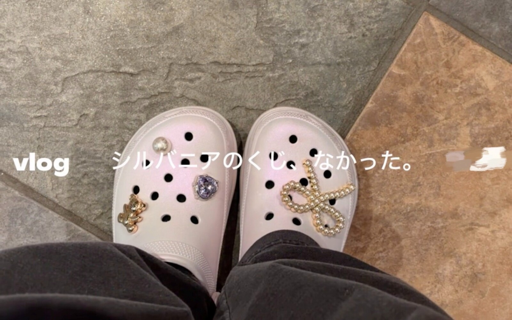

橘杏咲の立ち話もなんですから！ 第27回橘杏咲的“站着聊可说不完！” 第27回
皆さんこんにちは〜。
大家好〜。
10月になりましたね。
转眼到10月了呢。
もうあっという間とは言いません。なぜなら、言いすぎているから。
我已经决定不再说“一眨眼就过去了”。因为实在说得太多次啦。
Xでもコラムでも、ことあるごとに「もう○月」と言っている気がして、ふと、私の会話デッキ？ コメントデッキ？ が少なすぎるのでは？ と思いました。
感觉不管是在 X 上还是在专栏里，我动不动就在说“已经○月了”，突然冒出一个念头：我的聊天卡组？发言卡组？是不是太匮乏了一点啊？
意外と（じゃないかもしれませんが）SNSの更新が上手ではないので、毎月自分の中で1ヶ月に1回は日常ポスト的なものをしよう！ と意気込んでいるのですが、ほぼ毎回と言っていいほど「もう○月」デッキになっている気がします。
我意外地（也许大家并不觉得意外）不太擅长更新社交平台，所以每个月都会在心里暗暗鼓劲说“每个月至少发一条日常动态吧！”，结果几乎每次都打出了“已经○月了”这套卡组。
私はひとつの物事について短時間でガッと深く考えて、考えた結果、思考を放棄してしまうということが多いのですが、きっとそれゆえに日常ポストに向いていないのかなぁなんて。
我经常会对同一件事在短时间内猛地往深处钻研，想完一通之后干脆放弃思考，大概就是因为这个毛病，才不太适合发日常动态吧。
1日1日で思ったこと、感じたことが粒立って1000個くらいあったとしても、それをポストするという行程に移行している途中で、これをポストしたらどうなんだろうと考え始め、その後……まぁ、しない方がいいなとなって下書きが削除されちゃうんですよね。難しいですね。きっと、そこまで考えなくてもいいものなのでしょうが。
哪怕每一天里冒出来的鲜明念头和感受有1000个之多，在把它们变成帖子的过程中，我也会开始琢磨“发这个真的好吗”，接着……就会得出“算了，还是别发比较好”的结论，把草稿删得一干二净。真难啊。明明大概是根本不需要想那么多的事情才对。
これからも自分のペースでまったり更新していくので、あたたか〜く見守っていただけると嬉しいです。
今后我也会按自己的节奏悠哉地慢慢更新，如果大家能温〜暖地守望着我，我会很开心的。
でもやっぱり、もう10月ですって。はや。
可是话虽如此，居然已经10月了耶。好快。
毎月コラムを書くたびに思うのですが、最初にちらっとお話ししたように、私はひとつの物事をいい意味でも悪い意味でも多角的に見てしまう癖があって。素直じゃないというか。
每个月写专栏的时候我都在想，就像开头稍微提过的那样，我有个习惯，无论是好的方面还是坏的方面，总是会从多个角度去审视同一件事。或者说有点不够直率吧。
たとえば「楽しい」というキーワードがあったとして、そこからまたいくつかのキーワードに枝分かれして……という感じで、私の脳内はだいたい樹形図みたいになっています。なんだかちょっとカッコつけて言っていますが、実際これかなり厄介で。
打个比方，假如脑海里出现一个“开心”的关键词，从它这里又会分叉出好几个别的关键词……我的大脑里大概总是像一棵树状图一样。虽然说起来听着还有点酷酷的，但实际上这毛病可麻烦了。
考えた末に、自分が納得できるしっかりとした結論がひとつ出ればいいのですが、出ないことの方がほとんどなんですよね。感想やコメントをするときも、これが言いたいというものがひとつあったとしてもそれと真逆のことも枝分かれして存在していて、それらを全部ひっくるめると、結局ものすごく抽象的なキーワードに着地してしまう。みたいな。
要是思考到最后能得出一个让自己心服口服的明确结论还好，偏偏绝大多数时候根本得不出结论。哪怕在发表感想或感言时也是这样，就算心里有一个“我想说这个”的念头，分叉出来的枝丫里也同时存在着截然相反的想法；把这些全都打包在一起，最后往往就落脚到了一个极其抽象的关键词上……大概就是这种感觉。
そのせいで、もっとこう表現できたらなと後から思うことも多いです。でも、後悔とかたらればってすごく苦手なので、なるべく考えないようにはしています……(ここで流れる乃木坂46さんで『考えないようにする』)。
正因如此，事后我也常常会想“要是能那样表达就好了”。不过我特别受不了后悔啊、“早知道就……”之类的假设，所以尽量提醒自己别去多想……（此时背景响起乃木坂46的《考えないようにする》）。
私はプラシーボが効きやすすぎるちゃんでもあるので、少し気持ちが落ちているときに考え事を始めると、本当にだめで。少しでももしかして私、今こう感じてしまっているのではないだろうかと思うと、本当にそうかもといつの間にか自分で自分を納得させてしまうんですよね。
再加上我还是个超容易中安慰剂效应的“过度酱”，只要心情稍微有点低落时开始胡思乱想，就彻底完蛋了。只要心里稍微闪过一丝“难道我现在其实正这么难受吗”的念头，不知不觉间就会自己把“说不定真的是这样”给坐实了。
だから、疲れているときほど人と会いたくなってしまいます。なのはのラジオでも話題に出ましたが、人と会えば考え事をしなくていいから！ 結果、疲れは全然取れていない、ということも多くて元も子もないんですけどね(笑)。でも、人と会うことでマイナスが増えることはなくて。溢れ出しそうだったものを、いったん堰き止めてもらえるような感覚があるので、それでいいんだぁ〜と思っています。
所以，越是疲惫的时候，我反而越想见人。之前在《奈叶》的广播节目里也聊到过这个话题，因为只要见了人，就不用一个人胡思乱想啦！虽然结果经常是疲劳一点都没缓解，搞得本末倒置就是了（笑）。不过，和人见面绝对不会让负面情绪增加。反而有种把快要满溢出来的情绪暂时筑堤拦住的感觉，所以我觉得“这样也挺好的呀〜”。
人に助けを求めることもできるし、落ちるところまで落ちたとしても、最後は自分で這い上がってこられる強さはあると自負しているので、自分のことはちゃんと信用できています。ただ、もう少し効率良くくるしまない術は身につけたいですね。
我既懂得向别人求助，也自负地认为，就算跌落谷底，最后自己也有重新爬上来的韧劲，所以我还是挺信任自己的。只是，希望还能稍微掌握一点更高效地“不让自己那么煎熬”的窍门呢。
最近ちょっと気を抜くと、彩度バーが左にスライドされている気がしてうむむとなってしまう。けど、もしかしてこれが大人になる…ってコト1″と、今は思い込んでおきます。だからこそ、最近の日本のアイドルさんの楽曲には日々元気をもらっています！明るい曲を聴いていると、ちゃんと明るい方へ引っ張っていってもらえる感じがして。アイドル最高。
最近只要稍微一松懈，就感觉色彩饱和度滑块悄悄往左滑了，让人忍不住直犯嘀咕。不过我现在姑且说服自己：难道这就是长大成人……的意思!? 正因为如此，最近我每天都在从日本偶像们的歌曲里汲取元气！听着明快的歌曲，就有种被稳稳拉向明亮方向的感觉。偶像万岁！
そして！ そう！ そうですよ。このお話はしておかなくちゃ。
然后！对！没错，这件事可一定要聊聊。
少し前になりますが、オルケリア1stライブ『PRINCESS RESONANCE』が無事終了しました！ありがとうございました✨
虽然已经是前一阵子的事了，ORCHERIA 1st Live《PRINCESS RESONANCE》已经顺利落幕啦！真的非常感谢大家✨
先日はナガノアニエラフェスタ2026にも出演させていただきました！アニメの放送が終了しても、こうしてライブという形で皆さんに歌をお届けできること、やっぱり嬉しいですね。
前几天我们还出演了长野 Aniera Festa 2026！即使动画的播出已经结束，依然能够像这样以演唱会的形式把歌声送到大家身边，果然是一件非常幸福的事呢。
前回のコラムで10月のコラムではしっかり感想を。なんて言っていたのですが、いざこうして文字に起こそうとすると、かなり難しいな〜と。
虽然在上回专栏里说着“要在10月的专栏里好好写写感想”，可真到了要落笔化作文字的时候，才发觉这实在太难了〜。
いろいろな枝分かれキーワードはあるけれど、ひとつに絞るなら、プリンセッション・オーケストラという作品に参加できて、本当によかった。これに尽きるのだと思います。
脑海里虽然分叉出了许许多多的关键词，但如果只凝练成一句话，我想莫过于：能参与到《Princession Orchestra》这部作品中，真的太好了。一切尽在不言中。
今、文字を打ちながら当日のことを思い出そうとしているのですが、脚色なしで、あのときのままの感情を文字に起こせない！ 緊張も、不安も、楽しいも、難しいも、面白いも。人間が感じることのできる喜怒哀楽全て感じられたと言っても過言ではないかも。
此刻一边敲字一边试着回想当天的情景，却怎么也无法不加修饰地把当时原原本本的心情写成文字！紧张也好，不安也好，快乐也好，艰难也好，有趣也好——毫不夸张地说，人类所能体会的喜怒哀乐，那天我大概全都体验了一遍。
あの瞬間の私だからこそ感じられたもの、感じられなかったものがあるなと思いました。夜公演のパフォーマンスが終わった後のウルはなんの感情にも分類できないウルだったかと思います。それもそれで大切にしたいです。
我觉得，一定有些感受是只有那一瞬间的我才能体会到、也有一些是当时尚未能体会到的。夜场演出结束后涌上眼眶的那阵湿润，大概是无法归入任何单一情绪的泪意吧。而这份说不清道不明的心情，我也想好好珍藏起来。
また一年くらい経ったら、あのときはこうだったな〜と振り返ろう🎶 すぎるちゃんを発動させないためにも、今はあのとき、あの瞬間に感じたものを、名前をつけずにそのまま閉じ込めておくことにします(BGM『光の栞をはさんで』)。
等再过一年左右，再来回味“那时候是这样啊〜”吧🎶 为了不让体内的“过度酱”发动，现在我就把那天、那一瞬间感受到的一切，不赋予任何名字，就这样原封不动地珍藏封存起来吧（BGM：《光の栞をはさんで》）。
とにかく。一緒に楽しんでくださって、ありがとうございました！
总之，非常感谢大家和我们一起享受这场演出！
先月のコラムで気を抜くと真面目チックなお話になってしまうから来月は楽しいお話いっぱい持ってきますね〜とか言ってたのにまた似たようなテンション感になってしまった。
上个月专栏里我还说着“一不留神就会写成一本正经的谈心风格，下个月一定带回一大堆开心的故事〜”，结果这回又变成差不多的基调了。
雨が続いたのもあって、なんだかんだ9月遠出できなかったのは悔やまれるのですが、今月もしっかり観劇に行きましたよ！今月は劇団四季さんの『アラジン』を観に行きました！
加上阴雨连绵，9月终究没能去成远足，实在有点遗憾，不过这个月我还是稳稳去看了剧哦！本月看的是四季剧团的《阿拉丁》！
一時期毎月のようにアラジンに通っていたのでいつぶりだろうと思って調べたら、まさかの四年ぶりでした。信じられないです。
以前有一阵子我几乎每个月都要去打卡《阿拉丁》，心想“这回隔了多久来着”，一查才发现居然已经时隔四年了，简直不敢相信。
まっすぐな少年のアラジンと少し小悪魔お姉さんなジャスミンのバランスが良すぎて良すぎて……。映画のように視点が固定されていないので色々な場所を観られるというのも舞台ならではですよね。何度見ても新鮮に楽しめるので本当にすごいです。
率直少年感的阿拉丁和略带点小恶魔大姐姐气质的茉莉公主，两人之间的化学反应实在太绝了、太绝了……而且舞台剧不像电影那样镜头固定，可以自由地看舞台上的各个角落，这也是现场舞台独有的魅力呢。无论看多少遍都能收获全新的快乐，真的太厉害了。
大人になってからの私の目には特にジャスミンがとっても魅力的な女性に写って……！！気高く美しくて頼もしいけれど自由奔放で愛らしい、ずるすぎる。大人っぽく見えるジャスミンですが、パパ〜🤍 と駆け寄る姿は幼く見えますし、アラジンといる時の乙女な姿はどこか色っぽく……王様がメロメロなのも分かります。
在长大成人后的我眼里，茉莉公主显得尤为迷人……!! 她高贵美丽又可靠，同时又自由奔放、娇俏可爱，这魅力简直犯规。平时看着颇有成熟韵味的茉莉，一喊着“爸爸〜🤍”飞奔过去时又显得那么孩子气，和阿拉丁在一起时那副少女情怀的模样又透着几分动人的妩媚……我完全理解国王为什么会被她迷得神魂颠倒了。
前回のコラムでBTTFをおすすめしましたが、アラジンも大オススメです！！！！！ アグラバーはキラキラ絢爛豪華で見てて飽きないですし、アラジャスをはじめとした全キャラクターとっても魅力的ですし、ジーニーはめちゃくちゃ面白いですし！！！ きっと知ってる曲もたくさんあると思うので、観劇初心者の方も楽しめること間違いなしです。「フレンドライクミー」や「ホール・ニュー・ワールド」ももちろん大好きですが、私は「壁の向こうへ」と「行こうよどこまでも」が特に好きです。いや、全曲好きだ！！！
上回专栏里我安利了《回到未来（BTTF）》，这次我也超————级强烈推荐《阿拉丁》!!!!! 阿格拉巴城金碧辉煌、璀璨夺目，怎么看都看不够；以阿拉丁和茉莉为首的全员角色都极具魅力；灯神精灵更是搞笑到不行!!! 剧里肯定有很多大家耳熟能详的曲子，哪怕是初次进剧场的新手也绝对能看得过瘾。《Friend Like Me》和《A Whole New World》我当然都很爱，不过我个人特别喜欢《壁の向こうへ（宫墙之外）》和《行こうよどこまでも（远走高飞）》。不对，其实全曲我都爱!!!
また来月も何か観に行きたいな〜〜！！！！
下个月也想再去看点什么呀〜〜!!!!
あと9月はお馴染み中高のいつメンでお誕生日会をしたり、相変わらずアフヌンに行きまくっていたりと8月とあまり変わらない過ごし方をしていました。夏は、間に合いませんでした。また来年頑張ります。
另外9月我还和熟悉的初高中老铁们办了生日会，一如既往地疯狂打卡下午茶，整体过法和8月没太大差别。终究还是没赶上夏天的小尾巴。明年再战吧。
写真があまりにもないので今月は私のセットログの一部です。お気に入りクロックス。
实在太缺照片了，这个月就放一张我的单品穿搭记录（Set Log）之一吧。这是我最爱的 Crocs 洞洞鞋。

お誕生日会といえば、10月は私のおたんじょう……び……だぁ。
说到生日会，10月就是我的生……日……啦。
自分に何か買ってあげようかしら。考えておかなくちゃ🎶
要不要给自己买点什么呢？得好好想想啦🎶
そういえばデジカメを買ったりもしてました。スマホだと自分の写真を撮るのが楽しくない(？)ので、デジカメを買ったらお出かけした時に写真を撮るのが楽しくなるかもと思い買っちゃいました。かなり使っているのですが自分の写真は全然ないのでいつか撮ったらひっそり挙げます……。あとイヤホンも買っちゃったんでした！！意外と自分にご褒美をたくさん買ってた！！(笑)
说起来我还买了台数码相机。总觉得用手机拍自己好像没啥乐趣（？），想着要是买了数码相机，出门玩的时候拍照说不定会变得更有意思，就果断下手了。虽然用得挺勤快的，但里面完全没有我自己的照片，等哪天拍了再悄悄发出来吧……对了，我还顺手买了副耳机!! 没想到不知不觉间已经给自己买了好多奖励了!!（笑）
まぁ、ご褒美とお誕生日プレゼントは別ということで。
嘛，平时的小奖励和生日礼物当然要分开算啦。
では今回もここら辺で……今月の目標？？？？はズバリ
那么这一回也差不多到这里吧……本月的目标???? 就是——
「た〜っくさん甘やかす♡」です。
《好〜好宠爱自己一番♡》。
お誕生日月だもん！ 楽しい1ヶ月にしたいから！！ 目標でもなんでもないですが、2026年の中で1番良い月にするくらいの気持ちで！！
毕竟是我的生日月嘛！想让它成为开心的一个月!! 虽然这压根算不上什么正经目标，但我要抱着把它过成2026年最棒的一个月的心情冲啦!!
……もしかして、秋アニメが始まりますか！？！？ もしかして、夏アニメが終わってしまったのか！？！？ コラムを書いている現段階ではまだ終わった気持ちになれていないので実感が湧きません……。ちょっとまだまだ話し足りていないのですが、こちらの私の時間軸が追いついてないのでまた来月に回しても良いですか🥺
……等等，难道秋季新番要开播了吗!?!? 难道夏季新番已经完结了吗!?!? 写这篇专栏的当下我心里还完全没觉得结束了，一点实感都没有……虽然还有好多话没聊够，但这边我的时间轴实在还没跟上，可以允许我留到下个月再聊吗🥺
2026年ラストクールですね！！ また1クール、楽しんで行きましょう！！
2026年的最后一个季度到来啦!! 接下来的这一个季度，也要一起开开心心地度过哦!!
あ！！ あとこれだけは！！ なんと、声優グランプリ11月号の「Happy Birthday！」にて、特集していただきました！！
啊!! 还有这件事一定要说!! 没想到我竟然登上了《声优Grand Prix》11月号的“Happy Birthday！”特辑!!
まさか誌面でお祝いしていただけるなんて……うれしい限りです。
真没想到竟然能在杂志版面上收到生日祝福……真是开心极了。
是非チェックしていただけると嬉しいです！
如果大家能去看看，我会非常开心的！
よ〜し良い1ヶ月にするぞっ。
好嘞〜要把这个月过得棒棒的！
では！
那么下次见！
橘さんに質問！向橘小姐提问！
Q：橘さんは趣味に歌うこととあったり、作品のキャラソンを多く担当していたりと、歌にとても縁のあるイメージがあります！そこで、プライベートでカラオケに行った時はどんな歌を歌っているのか教えていただきたいです！いつか、橘さん個人の歌も聴ける日があればいいなと思っています！（愛知県・えの）
问：橘小姐的个人资料里兴趣写着唱歌，平时也演唱了很多作品的角色歌，给人一种和音乐特别有缘的印象！因此想请教一下，您私下去KTV的时候都会唱些什么歌呢？也希望有一天能听到橘小姐以个人名义演唱的歌曲！（爱知县·えの）
えのさん、ご質問ありがとうございます！
えの，感谢你的提问！
確かに！そうなんですよね！！昔から歌が大好きで得意！というわけではないのですが、幼い頃から観劇へ行っていたというのもあるのでしょうか…歌を歌わせていただく機会にかなり恵まれていますね。嬉しいことです。
确实！还真是这样呢!! 其实我并不是那种从小就“超级爱唱歌而且特别拿手！”的类型，不过或许也有从小就常去看音乐剧舞台剧的影响吧……现在真的很有幸获得了好多唱歌的机会，非常开心。
そうですねカラオケ…基本日本の女性アイドルさんの楽曲ばかり歌っています。中学生の頃はモーニング娘。さんの楽曲か、ボカロしか歌ってなかったです。パッと思いつく、どんな友人と行っても良く歌う楽曲を色々なジャンルから選ぶと「シャボン玉」「初恋サイダー」「この空がトリガー」「サマータイムレコード」「Ready Steady Go!」とかでしょうか……。最近はあまりフラッとカラオケに入ることはないのですが、行ったら全国ランキングから知ってる曲をポコポコ入れちゃいます。
说到唱K嘛……我基本清一色都在唱日本女子偶像的歌。初中那会儿，除了早安少女组。（モーニング娘。）的歌就是 Vocaloid 歌曲，别的几乎不唱。要是立刻从各种曲风里挑几首不管跟哪个朋友去都经常点的歌，大概就是《シャボン玉》《初恋サイダー》《この空がトリガー》《サマータイムレコード》《Ready Steady Go!》这些吧……最近虽然不太会心血来潮随便溜进KTV了，但只要去了，就会从全国排行榜里噼里啪啦一通猛点自己会唱的歌。
ボイトレにちょこちょこ行っているのですが、最近はいつも歌うようなジャンルではない楽曲を練習し始めました！ 色々なジャンルの楽曲を歌いこなせるようになったらお芝居の幅もまた少し広がるんじゃないかな、なんて思って練習に励んでいます😌 自分と自分の歌にでっか〜い自信を持てるように、皆さんにいつパフォーマンスを披露しても恥ずかしくないように、少しずつまったり頑張ります！
我平时也会断断续续去上声乐课，最近开始尝试练习一些平时不太会唱的曲风了！心想如果能驾驭各种不同风格的歌曲，说不定表演的戏路也能随之拓宽一点点呢，于是正努力练习中😌 为了能对自己和自己的歌声抱有大〜大的自信，为了无论什么时候在大家面前展现舞台都能挺直腰杆不露怯，我会按自己的步调一点点慢慢努力的！
お話してたら久々にヒトカラに行きたくなってきました。こんな曲合いそうとか、オススメな楽曲があったらこっそり？ 教えてください。私のヒトカラのプレイリストに加えさせてください。
这么一聊起来，我好久没去一个人唱K了，突然好想去呀。如果大家觉得“这首歌应该挺适合你的”或者有什么推荐曲目，请悄悄地（？）告诉我吧，让我把它们加入我的单人KTV歌单里！